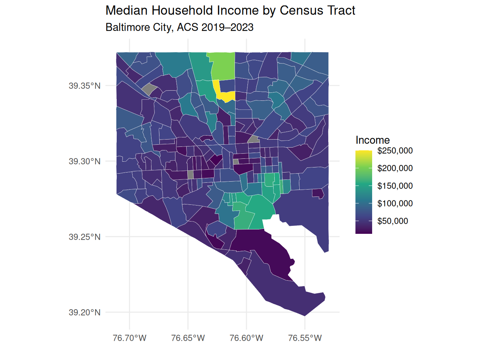
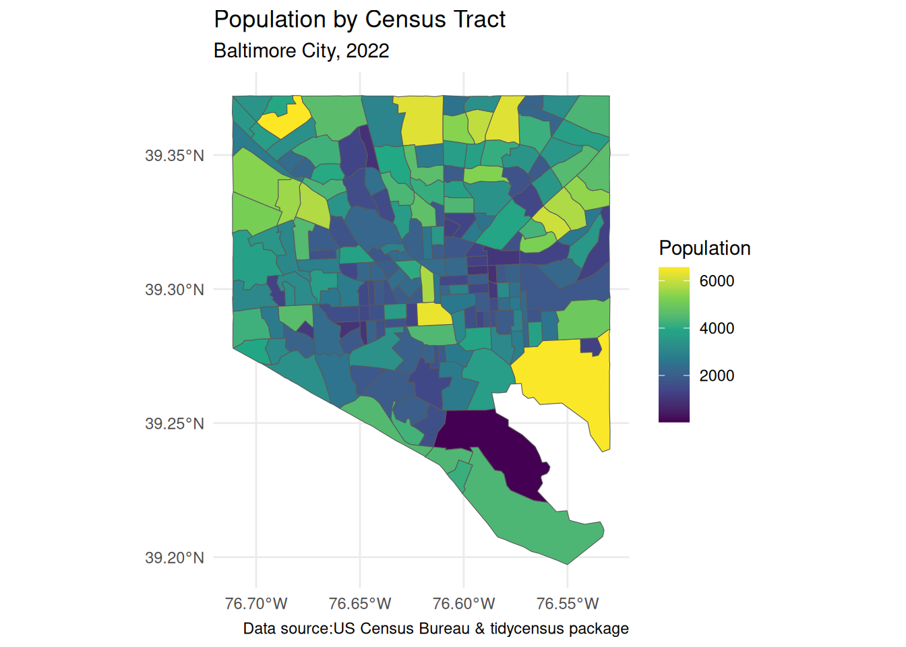
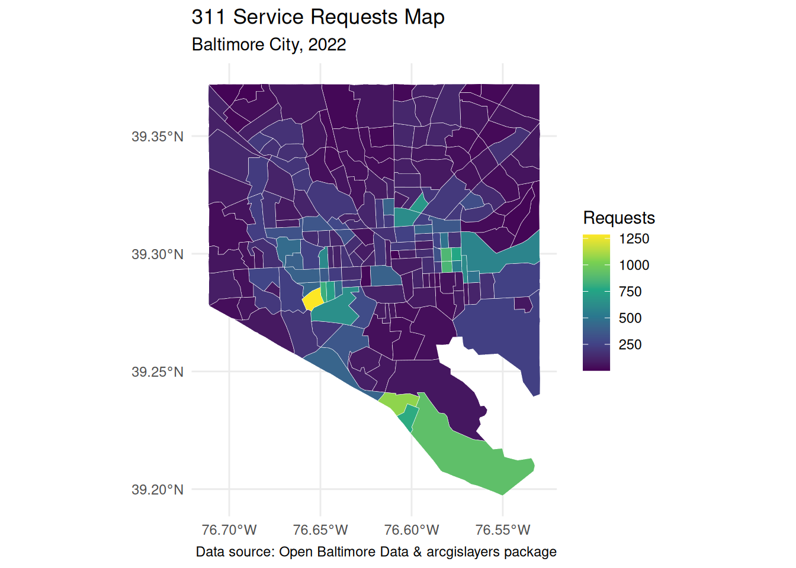
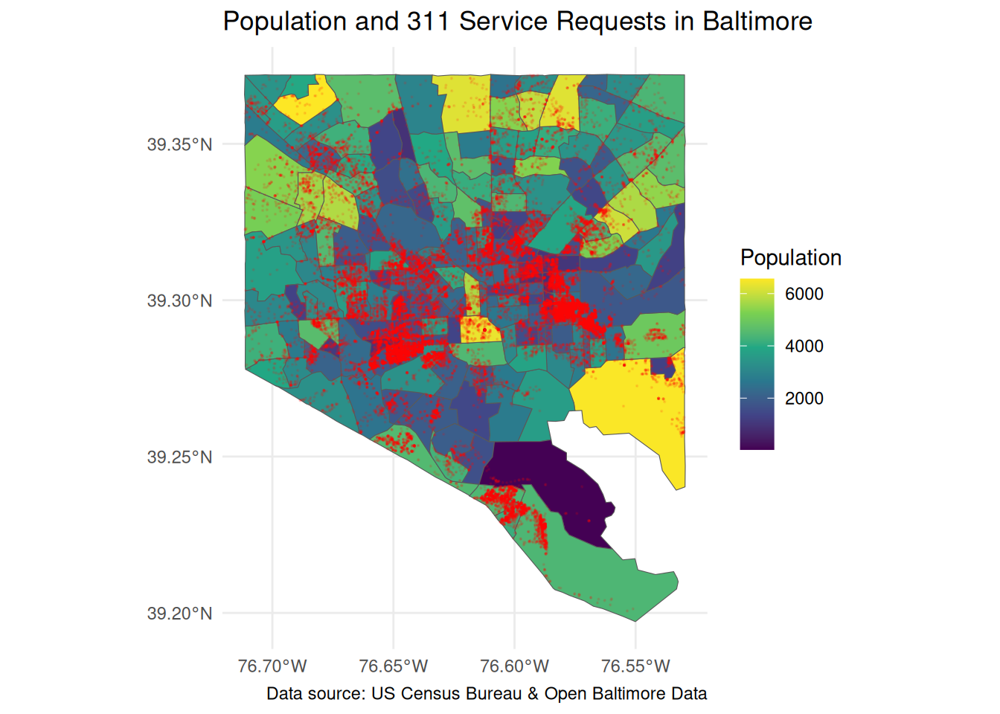
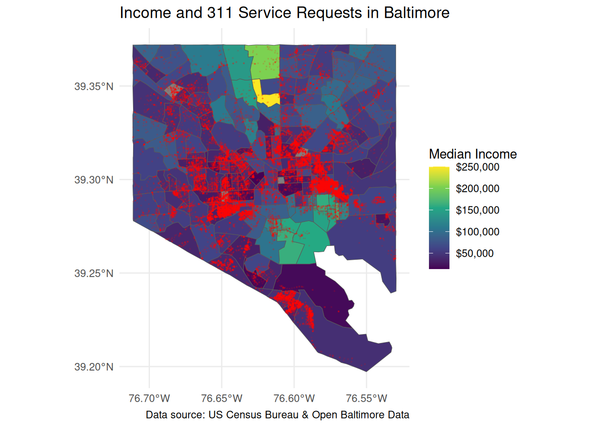
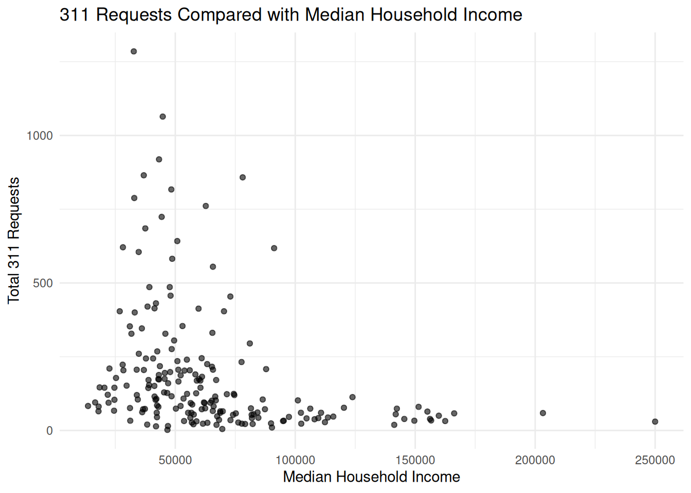
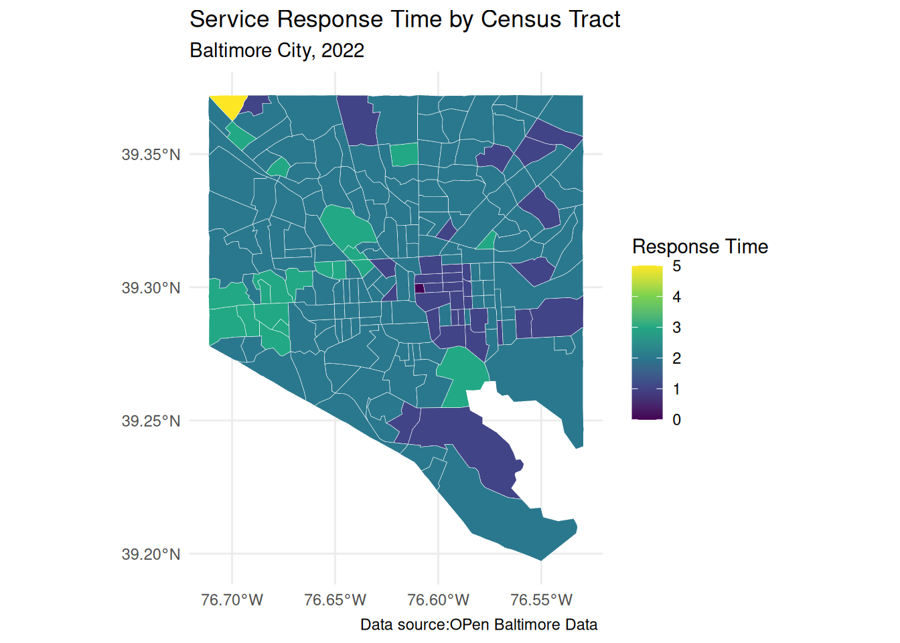

my_api_key <- Sys.getenv("CENSUS_API_KEY")
census_api_key(my_api_key, install=FALSE)GES668: Mapping Baltimore 311 Service Requests and Median Household Income
1 Introduction
The objective of this project is to analyze and visualize the spatial relationship between Baltimore 311 sanitation-related service requests and median household income from the American Community Survey (ACS) at census tract level.
Baltimore’s 311 system is a non-emergency service request platform where people can report issues such as sanitation problems, illegal dumping, road maintenance concerns, and other public service needs. Baltimore open data portal is a valuable source of publicly available spatial data that can be used to study urban conditions and patterns of municipal service requests.
This project focuses on two sanitation-related service request categories: SW-Dirty Street and SW-Dirty Alley. These request types are selected because they reflect visible neighborhood environmental conditions and may reveal spatial variations in public infrastructure concerns across the city. The objective is to understand how these requests are distributed geographically.
Baltimore 311 service request data was combined with median household income from the American Community Survey (ACS) . By integrating these datasets through spatial analysis techniques, the project explores whether areas with different income levels show differences in the distribution of service requests.
In addition to exploring urban spatial patterns, the project also demonstrates the use of reproducible GIS and spatial data analysis workflows in R.
2 Project Workflow Overview
US Census Bureau API Key
↓
Retrieve ACS Income & Population Data
↓
Open Baltimore API
↓
Fetch 311 Service Request Data
↓
Filter SW-Dirty Street & SW-Dirty Alley Requests
↓
Transform Coordinate Reference Systems (CRS)
↓
Spatial Join with Census Tracts
↓
Aggregate Requests by GEOID
↓
Create Maps & Graphs
↓
Spatial Analysis and Interpretation
3 Packages and Libraries
This project was entirely completed in R using the following packages for spatial analysis, data wrangling, census data retrieval, and visualization.
| Package | Purpose |
|---|---|
| tidyverse | Data cleaning, wrangling, and transformation |
| dplyr | Filtering, grouping, summarizing, and joins |
| sf | Spatial data handling and spatial operations |
| tidycensus | Retrieving ACS census data and tract geometries |
| ggplot2 | Creating maps and visualizations |
| viridis | Color scales for thematic mapping |
| arcgislayers | Accessing Open Baltimore ArcGIS service layers |
These packages were used to build a reproducible spatial analysis workflow, including importing data, transforming coordinate reference systems, performing spatial joins, aggregating service requests by census tract, and generating thematic maps for visualization and analysis.
4 Data Acquisition in R
The data sets used in this project are :
Open Baltimore 311 service request data for the year 2022
5 year American Community Survey (ACS) census data, a.k.a ‘acs5’
All data acquisition and pre-processing was done in R to maintain a reproducibility of the workflow .
Baltimore 311 service request data for 2022 was accessed through the Open Baltimore ArcGIS Feature Service API using the arcgislayers package. The data set was filtered to include only the SW-Dirty Street and SW-Dirty Alley service request categories used in this analysis.
American Community Survey (ACS) census tract-level data was also fetched using U.S. Census Bureau API with the help of tidycensus package . Access to both APIs required valid API authentication keys configured within the R environment before requesting data.
4.1 Using the tidycensus package
To use tidycensus package we need set a Census API key with the census_api_key() function.
API keys can be obtained from the US Census Bureau Website, make sure to activate the key from the email you receive from the Census Bureau so it works correctly.
4.1.1 Searching for variables in tidycensus
Searching for Census variables and understanding variable IDs is an important step. To fetch data from the ACS APIs, tidycensus offers the load_variables() function. There are thousands of variables available across the different datasets and summary files, load_variables() function obtains a dataset of variables from the Census Bureau website and formats it for fast searching in RStudio.
As this function requires processing thousands of variables from the Census Bureau which may take a few moments, we can specify cache = TRUE in the function call to store the data in the cache directory for future access.
dataset_list <- load_variables(year=2022, "acs5", cache = TRUE)
View(dataset_list)The returned data frame has four columns:
name, which refers to the Census variable ID
label, which is a descriptive data label for the variable
concept, which refers to the topic of the data and often corresponds to a table of Census data
geography, which specifies the smallest geography at which a given variable is available from the Census API.
The data can be viewed with the View() function.
By browsing through the table, we can identify the appropriate variable IDs (found in the name column) that can be passed to the variables parameter in get_acs() function.
get_acs() function can requests data from the 1-year or 5-year American Community Survey samples by mentioning the survey field.
balt_income <- get_acs(
geography = "tract",
variables = c(
income = "B19013_001",
population = "B01003_001"
),
state = "MD",
county = "Baltimore city",
year = 2023,
survey = "acs5",
geometry = TRUE,
key = my_api_key
)4.2 Using the arcgislayers package
The Baltimore 311 service request dataset was fetched directly from the Open Baltimore ArcGIS REST Feature Service using the arcgislayers package in R. The dataset was imported by using the arc_open() function, which provided a built-in way to connect to and retrieve ArcGIS data using REST API services. It also allowed the service layers to be queried and processed programmatically in RStudio. Note — it does not download the full dataset itself.
The arc_select() function was then used to retrieve/download selected attribute fields including service request type, request dates, and geographic location information. A SQL where clause was applied to filter the dataset to include only the SW-Dirty Alley and SW-Dirty Street service request categories used in this analysis.
ymd_hms() function from lubridate package and difftime() function was used to calculate the request duration using the request creation date and closure date in days. Records with negative service durations were removed from the dataset because a service request cannot logically be closed before creation. These records are likely data entry errors which is a limitation of publicly reported service request data.
Workflow used to retrieve and process the Baltimore 311 data is shown below:
url_311_2022 <- "https://services1.arcgis.com/UWYHeuuJISiGmgXx/ArcGIS/rest/services/311_Customer_Service_Requests_Yearly/FeatureServer/0"
service_311 <- arc_open(url_311_2022)
balt_311 <- service_311 |>
arc_select(
fields = c("ServiceRequestNum","SRType","CreatedDate","CloseDate","GeoLocation"),
where = "SRType IN ('SW-Dirty Alley', 'SW-Dirty Street')"
) |> mutate(
CreatedDate = ymd_hms(CreatedDate),
CloseDate = ymd_hms(CloseDate),
service_response_days = floor(as.numeric(difftime(CloseDate, CreatedDate, units = "days")))
) |> filter(
service_response_days >= 0,
service_response_days <= 100
)The ACS data fetched initially was in long format, where each Census tract was repeated for each variable, like population and median household income.
Example: Note how the variable and estimate columns contain both population and household income data for the same Census tract.
balt_income |>
select(GEOID, variable, estimate) |>
head(4)Simple feature collection with 4 features and 3 fields
Geometry type: MULTIPOLYGON
Dimension: XY
Bounding box: xmin: -76.66589 ymin: 39.32545 xmax: -76.55189 ymax: 39.36854
Geodetic CRS: NAD83
GEOID variable estimate geometry
1 24510151200 population 3406 MULTIPOLYGON (((-76.66506 3...
2 24510151200 income 36899 MULTIPOLYGON (((-76.66506 3...
3 24510270702 population 2194 MULTIPOLYGON (((-76.57356 3...
4 24510270702 income 76267 MULTIPOLYGON (((-76.57356 3...To make the dataset easier to understand, the pivot_wider() function from the tidyr package comes handy. pivot_wider() function transforms the data to a wide format. It converted the variable names into two separate columns, so each census tract had both population and income values within a single row.
The select() function was also used to retain only the relevant fields required for the analysis, like the census tract GEOID, variable values, and geometry information.
Example workflow used to reshape the ACS dataset: Note here we have 2 separate columns for population and household income.
balt_income_wide <- balt_income %>%
select(GEOID, variable, estimate, geometry) %>%
pivot_wider(names_from = variable, values_from = estimate)
head(balt_income_wide, 5)Simple feature collection with 5 features and 3 fields
Geometry type: MULTIPOLYGON
Dimension: XY
Bounding box: xmin: -76.69717 ymin: 39.31724 xmax: -76.52978 ymax: 39.3722
Geodetic CRS: NAD83
# A tibble: 5 × 4
GEOID geometry population income
<chr> <MULTIPOLYGON [°]> <dbl> <dbl>
1 24510151200 (((-76.66506 39.33338, -76.66266 39.33451, -76.… 3406 36899
2 24510270702 (((-76.57356 39.36854, -76.56764 39.36851, -76.… 2194 76267
3 24510272004 (((-76.69473 39.36801, -76.6942 39.36963, -76.6… 3961 69583
4 24510270501 (((-76.54842 39.36739, -76.54782 39.36807, -76.… 4388 84618
5 24510090700 (((-76.60149 39.31879, -76.59788 39.32236, -76.… 2714 375005 Spatial Data Processing
The Baltimore 311 service request data and ACS census tract data were processed as spatial feature (sf) objects in R using the sf package. Since both datasets originally have different coordinate reference systems (CRS), spatial data pre-processing is done before spatial analysis and joins.
The st_crs() function is used to check the coordinate reference systems of both datasets. The st_transform() function is used to transform the 311 point data to match the CRS of the ACS tract data. Both datasets should have the same CRS for accurate spatial joins and mapping.
After coordinate systems are aligned, the st_join() function is used to spatially join the 311 point data with ACS census tract polygons. After join, every service request point is then associated to the census tract polygon. Census tracts represent the spatial units of analysis, and GEOID is used as a unique identifier that was used to group and join data datasets.
For calculating the total number of service requests in each tract, the joined datasets are then aggregated by census tract using the group_by() and summarize() functions, from dplyr package.
Example workflow for transforming coordinate reference systems, spatial join and aggregation:
st_crs(balt_311)Coordinate Reference System:
User input: EPSG:4326
wkt:
GEOGCRS["WGS 84",
ENSEMBLE["World Geodetic System 1984 ensemble",
MEMBER["World Geodetic System 1984 (Transit)"],
MEMBER["World Geodetic System 1984 (G730)"],
MEMBER["World Geodetic System 1984 (G873)"],
MEMBER["World Geodetic System 1984 (G1150)"],
MEMBER["World Geodetic System 1984 (G1674)"],
MEMBER["World Geodetic System 1984 (G1762)"],
MEMBER["World Geodetic System 1984 (G2139)"],
ELLIPSOID["WGS 84",6378137,298.257223563,
LENGTHUNIT["metre",1]],
ENSEMBLEACCURACY[2.0]],
PRIMEM["Greenwich",0,
ANGLEUNIT["degree",0.0174532925199433]],
CS[ellipsoidal,2],
AXIS["geodetic latitude (Lat)",north,
ORDER[1],
ANGLEUNIT["degree",0.0174532925199433]],
AXIS["geodetic longitude (Lon)",east,
ORDER[2],
ANGLEUNIT["degree",0.0174532925199433]],
USAGE[
SCOPE["Horizontal component of 3D system."],
AREA["World."],
BBOX[-90,-180,90,180]],
ID["EPSG",4326]]Coordinate Reference Systems (CRS) defines how spatial data is referenced and positioned on the Earth’s surface. In this project, the Baltimore 311 data and ACS census tract data originally used different coordinate reference systems. So they have to be transformed before a spatial join.
Here balt_311 i.e the open Baltimore data set is WSG84 (CRS) and balt_income_wide i.e US Census Bureau data is NAD83 (CRS).
WGS84 (World Geodetic System 1984) is a standardized, Earth-centered, 3D coordinate system and datum used as the foundation for modern mapping, GIS, and GPS. It represents locations in form of latitude and longitude coordinates.
NAD83 (North American Datum 1983) is a coordinate reference system designed for North American regions and is widely used in U.S. government and census datasets. Compared to WGS84, NAD83 is optimized for more accurate positioning within North America.
The Baltimore 311 point data was changed using the st_transform() to match the coordinate reference system of the ACS census tract data.
st_crs(balt_income_wide)Coordinate Reference System:
User input: NAD83
wkt:
GEOGCRS["NAD83",
DATUM["North American Datum 1983",
ELLIPSOID["GRS 1980",6378137,298.257222101,
LENGTHUNIT["metre",1]]],
PRIMEM["Greenwich",0,
ANGLEUNIT["degree",0.0174532925199433]],
CS[ellipsoidal,2],
AXIS["latitude",north,
ORDER[1],
ANGLEUNIT["degree",0.0174532925199433]],
AXIS["longitude",east,
ORDER[2],
ANGLEUNIT["degree",0.0174532925199433]],
ID["EPSG",4269]]balt_311_NAD83 <- st_transform(balt_311, st_crs(balt_income_wide))
balt_311_joined <- st_join(balt_311_NAD83, balt_income_wide)
requests_by_tract <- balt_311_joined %>%
st_drop_geometry() %>%
group_by(GEOID) %>%
summarize(
total_requests = n(),
mean_service_days = round(mean(service_response_days, na.rm = TRUE))
)
balt_map <- balt_income_wide %>%
left_join(requests_by_tract, by = "GEOID") %>%
mutate(total_requests = replace_na(total_requests, 0))
head(balt_map, 5)Simple feature collection with 5 features and 5 fields
Geometry type: MULTIPOLYGON
Dimension: XY
Bounding box: xmin: -76.69717 ymin: 39.31724 xmax: -76.52978 ymax: 39.3722
Geodetic CRS: NAD83
# A tibble: 5 × 6
GEOID geometry population income total_requests
<chr> <MULTIPOLYGON [°]> <dbl> <dbl> <int>
1 24510151200 (((-76.66506 39.33338, -76.66266… 3406 36899 205
2 24510270702 (((-76.57356 39.36854, -76.56764… 2194 76267 27
3 24510272004 (((-76.69473 39.36801, -76.6942 … 3961 69583 5
4 24510270501 (((-76.54842 39.36739, -76.54782… 4388 84618 43
5 24510090700 (((-76.60149 39.31879, -76.59788… 2714 37500 685
# ℹ 1 more variable: mean_service_days <dbl>6 Visualization and Analysis
The processed spatial data-sets are then visualized using the ggplot2 and sf packages in R. Choropleth maps were created to examine the spatial distribution of Baltimore 311 sanitation-related service requests and median household income in Baltimore City census tracts.
6.1 Median Household Income Map
This map shows the spatial distribution of income in Baltimore City census tracts. The income estimates are from ACS 5-year estimates.
- Yellow and green shade tracts represent higher median household income levels.
- Blue shade tracts represent the lower-income areas.
The map helps visually see the income patterns of the city. It is a base map for comparing the 311 service request distributions.
balt_map |>
ggplot() +
geom_sf(aes(fill = income), color = "white", linewidth = 0.1) +
scale_fill_viridis_c(labels = scales::dollar) +
labs(
title = "Median Household Income by Census Tract",
subtitle = "Baltimore City, ACS 2019–2023",
fill = "Income"
) +
theme_minimal()
6.1.1 Analysis
- Many tracts of Baltimore have relatively lower median incomes.
- Higher-income tracts are more clustered in a few northern and southeastern areas.
- The Baltimore downtown region has relatively higher incomes.
6.2 Population Map
This map shows the total population distribution by Census tracts using ACS population estimates. This map provides an additional context for interpreting service request patterns, since areas with larger populations may naturally generate higher numbers of 311 requests.
balt_map |>
ggplot() +
geom_sf(aes(fill = population) ) +
scale_fill_viridis_c() +
labs(
title = "Population by Census Tract",
subtitle = "Baltimore City, 2022",
fill = "Population",
caption = "Data source:US Census Bureau & tidycensus package"
) +
theme_minimal()
ggsave("Images/pop_map2.png", width = 8, height = 6)6.2.1 Analysis
- Population is more evenly distributed.
- Some high-population tracts do not necessarily align with high-income areas.
6.3 Baltimore 311 Requests Map
This map shows the spatial distribution of sanitation-related service requests in the city. It highlights areas with higher concentrations of requests for SW-Dirty Street and SW-Dirty Alley. It helps identify the clustering patterns of sanitation concerns.
balt_map |>
ggplot() +
geom_sf(aes(fill = total_requests), color = "white", linewidth = 0.1) +
scale_fill_viridis_c() +
labs(
title = "311 Service Requests Map",
subtitle = "Baltimore City, 2022",
fill = "Requests",
caption = "Data source: Open Baltimore Data & arcgislayers package"
) +
theme_minimal()
ggsave("Images/service_req311_map.png", width = 8, height = 6)6.3.1 Analysis
- Requests are clustered in central urban tracts.
- The are fewer requests in peripheral tracts.
- Spatial concentration of requests is uneven.
6.4 Requests and Population Map
This map was created to see whether higher numbers of sanitation-related service requests are from higher populations tracts.
Population was used to provide additional context for the distribution of 311 service requests. However, total population may not be the most accurate variable for comparison because it includes all age groups, while 311 service requests are more likely to be reported by adults.
ggplot() +
# Base layer-population by tract
geom_sf(data = balt_map, aes(fill = population)) +
# 311 request points (dots)
geom_sf(data = balt_311_NAD83,
color = "red",
size = 0.1,
alpha = 0.1) +
scale_fill_viridis_c() +
labs(
title = "Population and 311 Service Requests in Baltimore",
fill = "Population",
caption = "Data source: US Census Bureau & Open Baltimore Data"
) +
theme_minimal()
ggsave("Images/service_req_population.png", width = 8, height = 6)6.4.1 Analysis
- Some clustering of request points is likely associated with higher population density, but population alone does not fully explain request concentration.
6.5 Income and 311 Requests Overlay Map
This map combines ACS median household income data with 311 service requests (SW-Dirty Street and SW-Dirty Alley) by Census tracts. Census tract polygons represent median household income, while the red dots represent service requests. This visualization shows the comparison between socioeconomic conditions and the spatial concentration of sanitation-related complaints in Baltimore City.
ggplot() +
# Base layer-income by tract
geom_sf(data = balt_map, aes(fill = income)) +
# 311 request points (dots)
geom_sf(data = balt_311_NAD83,
color = "red",
size = 0.1,
alpha = 0.1) +
scale_fill_viridis_c(labels = scales::dollar) +
labs(
title = "Income and 311 Service Requests in Baltimore",
fill = "Median Income",
caption = "Data source: US Census Bureau & Open Baltimore Data"
) +
theme_minimal()
ggsave("Images/service_req_income.png", width = 8, height = 6)6.5.1 Analysis
The red points are clustered more heavily in:
- lower-to-middle income tracts.
- dense central areas.
But importantly:
- Requests are not absent from higher-income tracts.
- Some low-income tracts also show fewer requests.
6.6 Requests and Income Graph
This scatter plot was created to further explore the relationship between median household income and total sanitation-related service requests by census tract. The graph is a non-spatial comparison of the variables and helps to identify possible trends, outliers, and variation in tracts.
balt_map |>
ggplot(aes(x = income, y = total_requests)) +
geom_point(alpha = 0.6) +
labs(
title = "311 Requests Compared with Median Household Income",
x = "Median Household Income",
y = "Total 311 Requests"
) +
theme_minimal()
ggsave("Images/service_reqn_income_plot.png", width = 8, height = 6)6.6.1 Analysis
This plot suggests:
- Higher request counts are concentrated mostly in lower and middle-income tracts.
- Lower request counts are seen in higher-income tracts.
But the relationship is not perfectly linear.
That’s actually a realistic urban data-set pattern.
6.7 Service Response Time by Census Tract
This map shows the average response time for sanitation-related 311 service requests in Baltimore city. The response time was calculated in days using the difference between the request creation date and closure date. Average response time values were aggregated by census tract to examine possible spatial variations in municipal response patterns.
balt_map |>
ggplot() +
geom_sf(aes(fill = mean_service_days), color = "white", linewidth = 0.1) +
scale_fill_viridis_c()+
labs(
title = "Service Response Time by Census Tract",
subtitle = "Baltimore City, 2022",
fill = "Response Time",
caption = "Data source:OPen Baltimore Data "
) +
theme_minimal()
ggsave("Images/SR_Time_map.png", width = 8, height = 6)6.7.1 Analysis
The map shows that average service response time in most tracts is between 1 and 3 days. However, a few tracts show higher response times, indicating some spatial variation in how quickly service requests were resolved across the city.
Overall variation in response times is not very large, the map shows that service delivery response patterns are not uniform in the city.
The analysis also highlights the importance of handling outliers and inconsistent timestamps when working with publicly available administrative datasets such as 311 service request records.
7 Challenges
Challenges encountered while working on this project helped me learn a lot about working with markdown files and the working of different packages used here.
Working with different coordinate reference systems (CRS) between the Baltimore 311 data and the ACS census tract data was a challenge. Spatial joins did not work correctly until both datasets were transformed into the same CRS.
Another challenge was understanding the structure of ACS data. The data was initially returned in a long format, where each census tract appeared multiple times. It had to be reshaped into a wide format using the pivot_wider() function before it could be used for mapping.
The project also faced rendering issues in Quarto. Some code chunks worked correctly in the RStudio console but produced errors during rendering because Quarto runs the document in a completely fresh R session. This required reorganizing the workflow and making sure all datasets and objects were created in the correct order.
Another challenge involved handling inconsistent records in the Baltimore 311 dataset. Some service requests showed negative service durations, likely caused by timestamp or data entry errors, so these records were removed during preprocessing.
I also encountered API key configuration and overwriting issues during rendering, which occasionally prevented the ACS data from loading correctly until the API key settings were fixed.
Creating clear visualizations was also an important part of the project. Different mapping and graphing approaches were explored to better represent the relationship between 311 service requests, income, and population across Baltimore City.
8 Limitations
This project has few limitations related to the datasets used. The 311 service request data is based on public reporting, so it reflects public reporting behavior . It can be safely said that it is not a direct scientific measurements of urban sanitation conditions.
Reporting patterns can also vary between neighborhoods depending on factors such as public awareness, civic engagement, and access to reporting systems.
Some records in the data set had negative response time which could a data entry error. These records were removed during preprocessing, but they are a part of the data set and highlight the limitations of publicly reported administrative data sets.
The analysis was conducted at the census tract level using aggregated ACS data. Aggregating data by tract may generalize local variations at block level patterns. In addition, areas with larger populations may naturally generate higher numbers of service requests, which can influence the interpretation of spatial request concentrations.
Another limitation of the analysis is the use of total population as a comparison variable for 311 service requests. Total population includes all age groups in the city, while sanitation-related service requests are most likely to be submitted by adults. Thus, total population does not fully represent the actual reporting population here.
This project focuses on exploratory spatial visualization and descriptive analysis. Though spatial associations between service requests and socioeconomic conditions can be seen but the analysis does not establish a definitive causal relationships between median income and sanitation-related complaints.
9 Conclusion
This project shows how open data can be used to make meaningful observations and analysis. It uses the Baltimore 311 service request data with the ACS median household income and population data. Both data sets here were fetched via an API key which shows how data can be fetched in real time .
All the maps generated had different analysis and patterns. The request map showed that service requests are not distributed evenly in the city. It can be safely said that there is no clear relationship between the median household income and service requests.Some of the city’s rich neighborhoods like the north central region and the areas near the harbor dont have similar request pattern.
While the areas near the harbor are rich neighborhoods and have high requests whereas the north central neighborhoods are also rich neighborhoods but have significantly lower requests as compared to the Baltimore Downtown. This suggests that additional social, demographic, and urban factors also influence the reporting pattern.
The project also highlighted the importance of data pre-processing, coordinate system alignment and spatial joins when working with real-world spatial data sets in R.
Overall, the project shows how spatial data sets can be used to understand the relationships between municipal service delivery and neighborhood socioeconomic conditions.